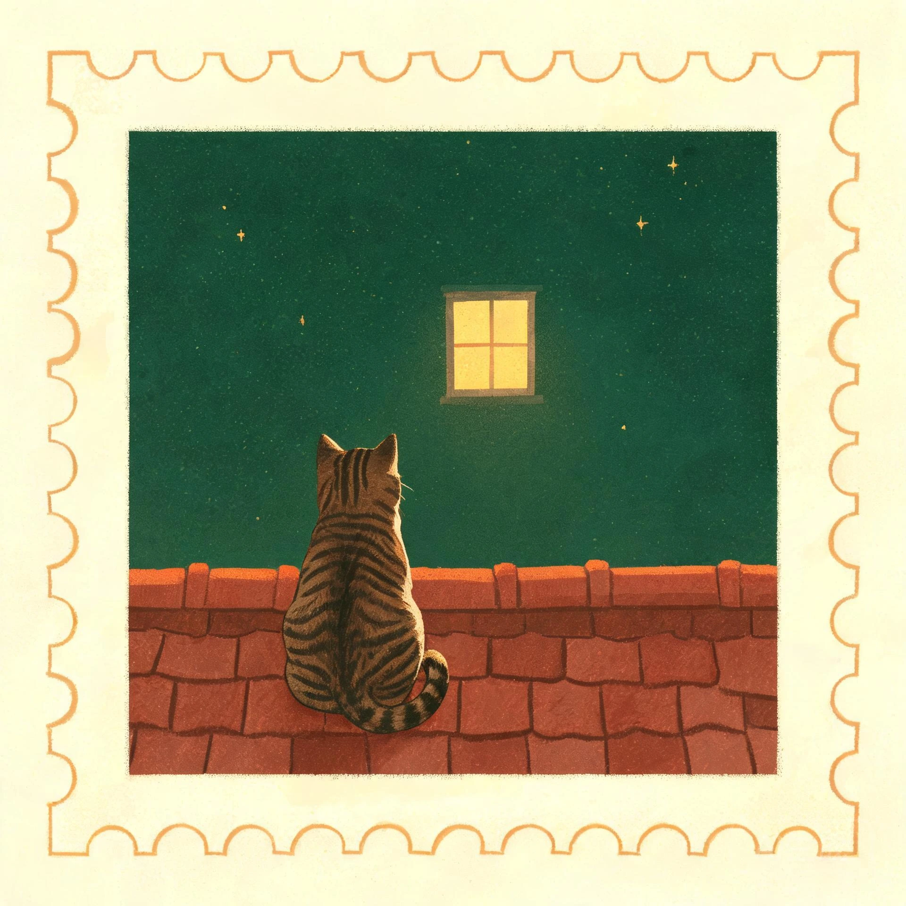
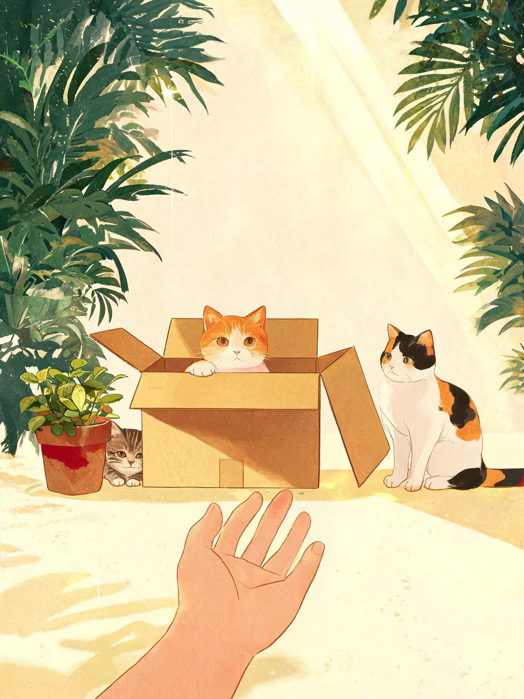
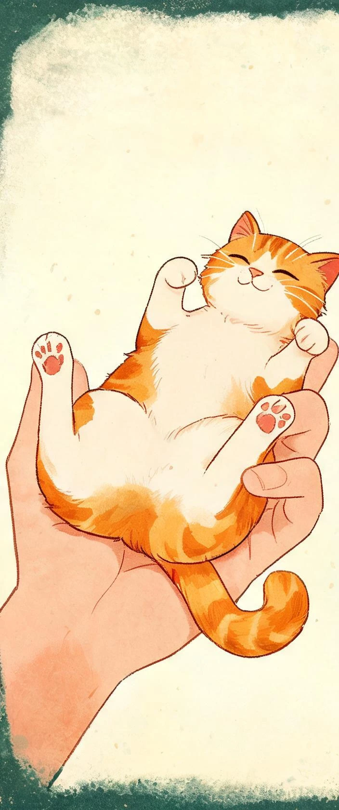

同创汇猫咪故事馆VOL.01 · 秋日来信 · 遇见纪念

我想对 TA 说
TA，我记住你了
今天也想摸猫
路过同创汇，来看看猫
81天后拆迁
距离同创汇拆迁，还有
TA 们还不知道，家要没了。


拆迁之前，让它们先被看见。
遇见 · 记住 · 守护愿每一场相遇，都通向一个家
你写的留言要有个署名。
这个名字和头像，会一起印在共鸣卡上。
这句话会印在你的共鸣卡上。
登记信息只存在你的手机里

摸到谁，就读读谁的故事。
馆里 15 位住客，每一只都等概率出现。

15 位，每一只都有名字。
带 的，是你已经摸过的。
点任意一只，读读 TA 的故事。
它们还不知道，家要没了——但可以先被记住。